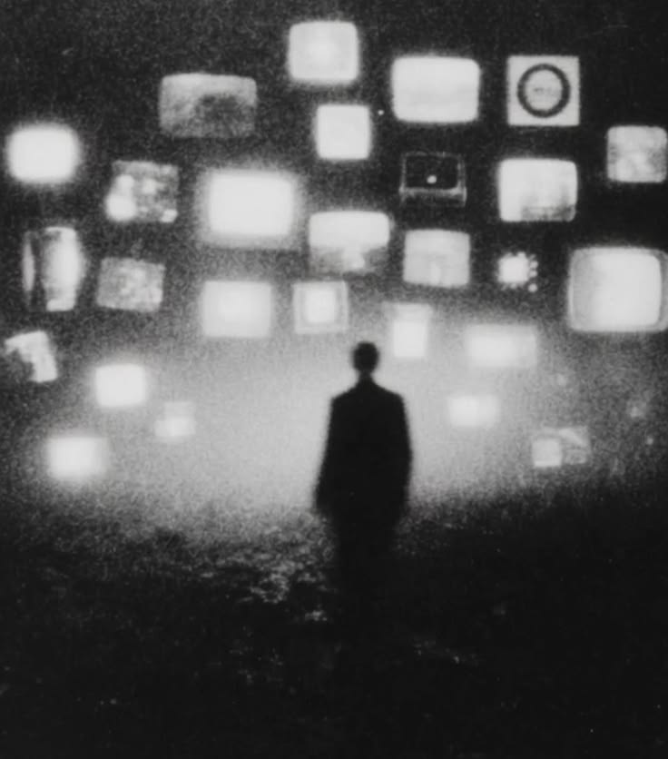

Ada saat ketika kita berhenti menyalahkan dunia.
Bukan karena dunia menjadi lebih baik.
Tetapi karena kita mulai sadar bahwa tidak semua hal memiliki jawaban.
Kita mulai memahami bahwa hidup tidak selalu memberikan alasan atas apa yang terjadi.
Ada orang yang lahir dengan banyak kesempatan.
Ada yang harus menghabiskan sebagian besar hidupnya hanya untuk bertahan.
Ada yang mendapatkan apa yang diinginkan.
Ada yang kehilangan sesuatu bahkan sebelum sempat memilikinya.
Dan tidak selalu ada penjelasan yang masuk akal.
Kita hanya mengalaminya.
Mungkin itulah bagian paling berat dari menjadi manusia.
Kita memiliki kesadaran untuk mempertanyakan hidup, tetapi tidak selalu memiliki jawaban untuk menjelaskannya.
Kita bertanya:
Mengapa aku di sini?
Apa yang sebenarnya ingin kulakukan?
Apa yang membuat hidup ini layak dijalani?
Apakah semua yang kulakukan akan berarti?
Tetapi semakin kita mencari jawaban, semakin kita menemukan pertanyaan lain.
Dan pada titik tertentu, kita sadar bahwa mungkin tidak ada seseorang yang akan datang untuk memberikan jawaban tersebut.
Tidak ada buku yang bisa menjelaskan seluruh hidup kita.
Tidak ada orang yang benar-benar bisa menjalani hidup kita untuk kita.
Pada akhirnya, kita tetap harus memutuskan sendiri.
Itulah yang membuat pilihan terasa berat.
Bukan hanya karena kita takut memilih hal yang salah.
Tetapi karena kita tahu bahwa pilihan kita memiliki konsekuensi.
Memilih satu jalan berarti meninggalkan jalan lain.
Memilih seseorang berarti mungkin kehilangan kesempatan untuk bersama orang lain.
Memilih sebuah pekerjaan berarti memberikan sebagian waktu hidup kita kepadanya.
Memilih untuk mengejar sesuatu berarti mengatakan tidak kepada banyak hal lain.
Setiap pilihan memiliki harga.
Dan semakin dewasa kita, semakin kita menyadari bahwa tidak memilih pun sebenarnya adalah sebuah pilihan.
Kita tetap bergerak.
Waktu tetap berjalan.
Dan sesuatu tetap berubah meskipun kita diam.
Mungkin karena itu kita sering mencari kepastian.
Kita ingin tahu apakah keputusan kita benar.
Kita ingin tahu apakah hubungan ini akan bertahan.
Apakah pekerjaan ini akan membawa kita ke tempat yang kita inginkan.
Apakah usaha yang kita lakukan akan berhasil.
Kita ingin melihat akhir sebelum berani memulai.
Tetapi hidup tidak bekerja seperti itu.
Kita harus berjalan tanpa mengetahui seluruh jalan.
Kita harus memilih tanpa mengetahui seluruh akibatnya.
Kita harus mencintai seseorang tanpa jaminan bahwa kita tidak akan kehilangan mereka.
Kita harus membangun sesuatu tanpa jaminan bahwa sesuatu itu akan berhasil.
Dan mungkin itulah yang membuat hidup terasa begitu berat.
Kita harus menjalaninya tanpa kepastian.

Ada hari ketika semuanya terasa memiliki tujuan.
Kita bangun dengan sesuatu yang ingin dikejar.
Kita memiliki rencana.
Kita memiliki ambisi.
Kita merasa tahu ke mana hidup sedang membawa kita.
Lalu sesuatu terjadi.
Seseorang pergi.
Sebuah rencana gagal.
Sesuatu yang kita percaya ternyata tidak seperti yang kita kira.
Dan tiba-tiba, arah yang selama ini kita ikuti terasa tidak jelas.
Kita bertanya lagi:
“Lalu sekarang aku harus ke mana?”
Tidak ada jawaban yang langsung datang.
Dan untuk pertama kalinya, kita mungkin hanya duduk bersama ketidakpastian itu.
Mungkin kita terlalu sering menganggap hidup harus memiliki makna besar.
Kita ingin melakukan sesuatu yang penting.
Meninggalkan sesuatu.
Menjadi seseorang.
Diingat.
Berarti.
Tetapi mungkin hidup tidak selalu membutuhkan sesuatu yang sebesar itu.
Mungkin sebagian besar hidup hanya terdiri dari hal-hal kecil yang tidak akan pernah masuk sejarah.
Percakapan singkat.
Makan malam bersama keluarga.
Tawa yang tidak direkam.
Perjalanan pulang.
Seseorang yang kita bantu tanpa pernah mengingatnya lagi.
Hari biasa yang tidak menghasilkan apa-apa.
Dan mungkin justru di situlah kehidupan sebenarnya terjadi.
Bukan pada momen besar yang kita tunggu.
Tetapi pada ribuan hal kecil yang terus berlalu sementara kita sibuk menunggu hidup yang lebih berarti.
Namun menerima kenyataan bukan berarti menyerah.
Mengetahui bahwa hidup tidak memiliki kepastian bukan berarti kita berhenti berusaha.
Justru mungkin sebaliknya.
Karena waktu terbatas, kita harus memilih.
Karena tidak ada kepastian, kita tetap harus mencoba.
Karena kehilangan mungkin terjadi, kita tetap memilih untuk mencintai.
Karena kegagalan mungkin datang, kita tetap membangun sesuatu.
Bukan karena kita tahu hasil akhirnya.
Tetapi karena hidup tidak memberikan kita pilihan untuk mengetahui semuanya terlebih dahulu.
Pada akhirnya, mungkin yang paling berat bukanlah hidup itu sendiri.
Tetapi kesadaran bahwa hidup ini benar-benar milik kita untuk dijalani.
Tidak bisa dikembalikan.
Tidak bisa diulang.
Tidak bisa dipinjamkan kepada orang lain.
Kita bisa meminta nasihat.
Kita bisa mengikuti orang lain.
Kita bisa menyalahkan keadaan.
Tetapi ketika semua suara itu berhenti, tetap ada satu kehidupan yang harus kita jalani.
Dan tidak ada orang lain yang bisa menjalaninya menggantikan kita.
Mungkin kita tidak akan pernah menemukan jawaban yang benar-benar memuaskan.
Mungkin kita tidak akan pernah benar-benar tahu apakah pilihan kita sudah tepat.
Mungkin sebagian pertanyaan memang akan kita bawa sampai akhir.
Tetapi mungkin manusia memang tidak diciptakan untuk mengetahui semuanya.
Mungkin kita hanya diminta untuk hidup dengan apa yang kita tahu.
Dengan apa yang kita punya.
Dengan keterbatasan yang tidak bisa kita hilangkan.
Dengan ketidakpastian yang tidak bisa kita kendalikan.
Dan tetap memilih.
Tetap berjalan.
Tetap menjalani hari berikutnya.
Karena pada akhirnya,
kita tidak bisa menunggu sampai hidup menjadi jelas untuk mulai menjalaninya.
Kita harus hidup
bahkan ketika kita masih bertanya
apa sebenarnya arti dari semua ini.